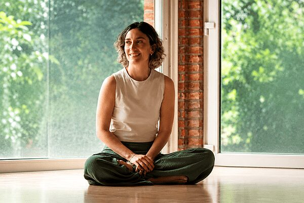

Expandirte es hoy. Sesiones individuales y grupales de Activación KAE® para soltar traumas, miedos y creencias limitantes almacenadas en el cuerpo.

Un espacio de acompañamiento cercano para mujeres recién madres.
Como puericultora, acompaño a mujeres recién madres en el encuentro con sus bebés: la lactancia, el sueño, los cuidados del recién nacido y todo lo que aparece en esos primeros tiempos.
Un espacio de escucha y contención para transitar el puerperio con más presencia y menos soledad, resolviendo dudas concretas y sosteniendo también lo emocional de esta nueva etapa.
ConsultarOriginal de Activación de Energía Kundalini, para trabajar la información emocional reprimida en el cuerpo.
Tendrás una sesión plena de KAE® conmigo, donde profundizaremos en la liberación de traumas, miedos, creencias limitantes y bloqueos emocionales almacenados en tu cuerpo como información reprimida. Avanzando de manera plena en la vida.
♡ A través de KAE® activamos puntos energéticos que desbloquean la información emocional bloqueada en diferentes niveles de conciencia, permitiéndote romper patrones, creencias limitantes y traumas — pudiendo avanzar en vínculos, proyectos y temas recurrentes de salud.
Agendemos 👇Un formato grupal e íntimo: un espacio compartido para soltar, sanar y expandirte junto a otras personas. Los cupos son limitados.
Reservar mi lugarropa con sentido
Co-creé Las Vaskas hace 12 años junto a mi hermana, para acompañar a que todas las mujeres se sientan bien por dentro y por fuera. Creamos prendas con sentido, entendiendo que todos los cuerpos son distintos: looks listos o a medida, sin costo extra.
Agendá tu sesión 1:1 o reservá tu lugar en la próxima Activación KAE® grupal.
💬 Escribirle a Belu